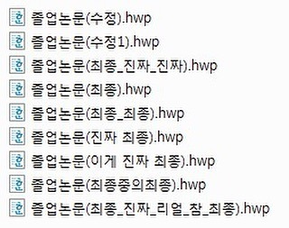

버전관리 시스템이란
소프트웨어를 만들고 운영하는 과정에서 계속해서 코드를 수정하게 되는데 누군가 실수로 잘못된 코드를 섞거나 막상 수정을 진행해보니 이전 버전이 더 나을 수 있고, 이전에 개발했다 삭제했던 기능이 다시 필요해 질 수 있고, 코드의 어디가 어떻게 바뀌었는지 확인하기 위해 과거 내역이 필요할 수 있고, 클라이언트의 요청대로 수정의 수정을 반복하여 최종본을 만들었더니 이전버전이 낫다고 할 수도 있고..너무나
많은 이유로 과거의 내역이 필요 할 수 있기 떄문에 우리는 유의미한 시점의 내역들을 프로젝트 진행 중간중간 저장해 놓습니다. 프로젝트를 진행 할 때 중요한 시점마다 프로젝트 파일 통째로 날짜나 설명 등을 파일명에 추가해서 저장 다들 한번쯤은 해보셨을 거라 생각합니다.아래 사진처럼..

하지만 위와 같은 방법은 너무나 잘못되기 쉽습니다. 작업하던 디렉토리를 지워버리거나, 실수로 파일을 잘못 고칠 거나 복사 할 수도 있고 또 수정내역의 변화를 파악하기 어려울 수 있습니다.
이런 문제점 해결을 위해 깃과 같은 버전관리 시스템을 사용하며 커밋을 수행 할 때마다 깃이 로그를 생성해주어 어떤 부분이 수정되었는지 쉽게 볼 수 있고 특정 로그를 선택하여 그 시점으로 돌아 갈 수 있습니다.

깃과 깃허브의 차이는?
Git: 로컬에서 버전 관리 시스템을 운영
GitHub: 깃허브 클라우드 서버에서 버전 관리 시스템을 운영

협업으로 프로젝트를 진행한다면 코드의 공유를 위해 깃허브의 사용은 필수적이며 개인적인 프로젝트를 진행한다면 깃허브의 사용이 필수적이지는 않으나 불의의 사고로 인해 본인 컴퓨터가 임종 해 버리시면 프로젝트를 처음부터 다시 시작하게 되는 슬픈 상황이 벌어질 수 있으므로 왠만하면 깃허브에도 로그를 만들어 두도록 합시다